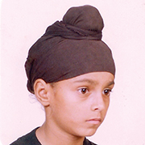

The first day of school is always exciting. Especially in primary school when you go over expectations for the year, play games or do icebreakers to learn about your fellow classmates. It’s all fun and games until the teacher takes out the class roster to see who is in attendance. That’s when I want the day to be over.
You ask yourself, “Why, Gurajpalpreet Sangha?” Well, as you read, my name is not one of the most common on classroom rosters. It certainly doesn’t live up to the easy names like Jacob Johnson, Sean Armstrong or even Derek Williams. During roll call, I find out how good my teacher is with pronunciation. I already know how things will turn out, but I still hold out a glimmer of hope that she might say it right. In fourth grade, a friend suggested, “Why don’t you change your name to Jake or even Benjamin?” I thought long and hard about it, and wondered; why not?
But the why not thought quickly evaporated when I realized how ridiculous it would sound if an Indian-born kid had one of those names. Can you imagine how I would be treated within the Indian community? I’d be the laughing stock of the neighborhood. It’d be a Russell Peters comedy skit — times three!
In Indian communities, some of the biggest trash talkers are relatives of the subjects. Some of my relatives even bad-mouth my cousins who don’t have Indian names or don’t speak Punjabi — one of many languages in India. You wonder, where’s the love, right? It is a tough life surviving in an environment where it seems like everyone and their mother has some sort of an opinion regarding someone else’s household. If the mother doesn’t teach her children Punjabi, relatives are going to talk behind the mother’s back until the child is 18 years old. But to be serious, I am proud of my name.
My grandmother, Naranjan Kaur, gave it to me. Gurajpalpreet means, “You’re God’s treasure.” She always tells me I’m only the second person in the world to have that name. (Some research through Google confirmed she’s right.)
Born in Kala Sanghian, Punjab, India, to Kuldip Singh and Manjit Kaur, I am one of three children. I have an older brother and a younger sister. My brother’s name is Sukhjinder Sangha and my sister’s name was Sabrina Sangha (1994). Try saying those names correctly on your first try. While I attended school in India, teachers had no problems saying my name. I sometimes even wished that teachers didn’t know my name; like when I got into trouble. But I guess that comes with the territory. I heard my name everywhere I went (I’m kind of a big deal.) For an 8-year-old, I was living the life — whatever that meant at the age of eight. Probably had unlimited juice boxes.
Then my parents informed me of the news that would change the course of my entire life. We were moving to the United States. I didn’t know what to think. I had heard some good things about America, but I didn’t know what was in store for me. My emotions were mixed. I was delighted with the thought of what the opportunity would provide for my family — the possibility of a better life. It would allow my brother and I to set and achieve goals we never imagined possible and most importantly, the change would help break the family trend of farming. The sad part about the relocation was starting over from scratch, not knowing anyone outside my family. In 1999, my grandmother, who was already in the United States, helped the family move to Woodland, Calif.
In January 2000, I entered the third grade, I didn’t know any English and had no idea if my teacher could say my name. Probably not. Not knowing English was hard enough. But I looked drastically different to what the students were accustomed to. My brother and I had a Kesh, since we were born, for religious purposes. Kesh is the practice of an individual allowing their hair to grow naturally as a symbol of respect for the perfection of God’s creation. My hair was about 15 inches long and everyday my mom would groom it and place a rumal (a small cloth similar to a handkerchief or a bandana) or a patka (a small garment that is tied around the head to cover the hair and keep it neat).
I had atrifecta going for me: myname, not knowing English and a Kesh. My fellow class mates taunted me,and I didn’t know why. I kept telling myself that the cruel jokes,and occasional fightswould pass, but they didn’t. All I wanted to do was fit in. Looking back, maybe I kind of helped the problem by overlooking it. Looking back, I’m happy I never came close to changing my name.
Some students I know, asked their parents to change their name because they couldn’t deal with people constantly asking how to spell or pronounce it. Or sometimes because of the abuse they encountered for being “different.” During this phase, I had asked my grandmother a lot of questions about the significance of my name. She answered as best she could, helping and inspiring me to embrace my name and overlook all negative reactions.
To help distract my mind from the drama regarding my name in school, I turned to sports. I most frequently turned to basketball. I started following the Sacramento Kings right as they became an up-and-coming team. Once, I remember the Kings playing the extremely talented Los Angeles Lakers. During the game, I cheered for both teams. My favorite players from the Lakers were Kobe Bryant and Shaquille O’Neal. One day, while I was waiting for a Lakers playoff game to start, I was watching a feature on Shaquille O’Neal. He talked about his childhood years and how he didn’t like his name because it was different from everyone else’s. He was also embarrassed of his height as he towered over his peers. During the interview, O’Neal mentioned something his mother had once told him: “Make them remember your name, make them remember you.”
Those words opened my eyes and struck a chord in me. After a couple of seconds, I whispered to myself, “You make people remember your name and remember you.” It was at that moment I felt content with my name and so whenever I met with people, I’d make sure they knew my name. Fourth grade came around and the same three kids from third grade continued to have a field day with me. But this time, I remembered that if I didn’t stand up for myself, no one would. I stood up and corrected the main bully. He was not fond of me correcting him and felt like I was belittling him. I was trying to avoid a confrontation, but he wasn’t. He grabbed me by my Kesh and moved me from one side to the other like his personal whip. The school principal broke up the one-sided fight and the kid got suspended. That was the last time the kid bullied me, and that would be the last time I was involved in a fight regarding both myname, or the way I looked.
As years passed, I made it my mission to never involve myself in any types of alterations, to stay level headed and to try to defuse any disagreement peacefully with words. When I’m not defusing confrontations, I’m trying to stay alert whenever my name comes up, so I can correct the teacher. There are multiple reactions that my name receives from educators. Some teachers will actually try, but fail miserably. Or they will say, “I can’t say the first name, but the last name is spelled out, S-A-N-G-H-A. Is he or she here?” And my all-time favorite is when the teachers reach my name and stop abruptly (like they just saw a dead body in the middleof aroad). Their facial expression shows their frustration, but they continue looking at it before finally saying, “First name starts with a G and last name starts with an S.” Sometimes — since I’m a nice guy — when the teacher gets stuck on my name, I raise my hand and say “Here,” so we can move on with class.
Through middle and high school, I was impressed with how easily teachers adjusted to pronouncing my name. Not a lot of instructors ask to give me nicknames, but a physical education teacher once asked if he could call me “G-Money.” I was shocked that a teacher asked to call a student by a nickname and I didn’t know how that nickname even fit me. I wasn’t offended, just surprised that an instructor would give a nickname that didn’t even resemble the original name. Years later, I still wondered what the teacher meant and typed in “G-Money” into Urban Dictionary. I am very happy with the definitions. “A prefix given to a person who is held in extremely high regard. They are a ‘G’ and they are money.” I liked the compliment. My name has helped me learn life lessons I never imagined possible. I’ve accepted the fact that my name is just different and still remind myself, “Make them remember your name. Make them remember you.”